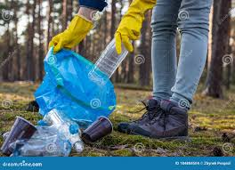
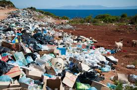
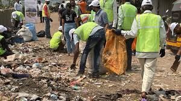

Plastic Collection & Sorting

At ECORECYCLE NEXUS, we employ dedicated collection points throughout the community where plastic waste is gathered, sorted by type, and prepared for recycling.
Our team ensures that every piece collected is properly categorized to enhance recycling efficiency.
GARBAGE COLLECTION
Uncollected garbage has a detrimental impact on our environment. By transforming waste into resources, ECORECYCLE NEXUS is contributing to cleaner, healthier surroundings.
Following are some of the areas of concern:
1. Institutional Garbage Collection
We provide reliable waste management solutions for schools, hospitals, government offices, and other institutions. Our tailored collection schedules ensure clean environments with minimal disruption to your operations.
2. Office Apartment Waste Collection
Our service caters to office buildings and mixed-use apartments, offering efficient collection and disposal to maintain cleanliness and hygiene. Flexible pickup times are available to suit tenant needs and minimize inconvenience.
3. Residential Garbage Collection
We serve homes by offering regular and timely garbage collection, ensuring your surroundings stay clean and fresh. From single households to gated communities, our solutions are designed for convenience and efficiency.
4. Estate and Community Waste Management
Our estate collection services focus on organized neighborhoods, gated estates, and community compounds. We provide dependable waste pickup schedules, working closely with management to foster sustainable and eco-friendly waste disposal practices.

Community Awareness
We believe that community involvement is crucial in maintaining a clean and sustainable environment. Our programs focus on educating the public on the importance of recycling, teaching best practices, and encouraging local participation to create a cleaner planet for future generations.
